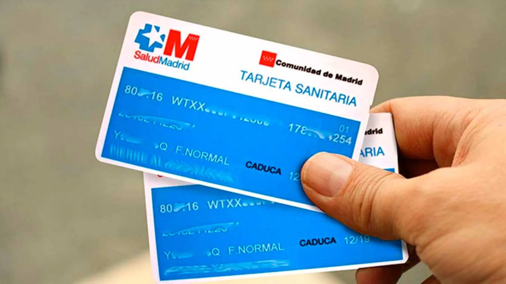

Trámites para Estudiantes Extranjeros
NIE (Número de Identificación de Extranjero)
¿Qué es el NIE?
El NIE es un número de identificación obligatorio para todos los extranjeros que residen en España por más de 6 meses. Es necesario para realizar trámites legales, abrir una cuenta bancaria, trabajar, etc.
- Documentos requeridos: Pasaporte, formulario EX-15, justificante de pago de la tasa.
- Dónde solicitarlo: Comisaría de Policía o Oficina de Extranjería.
- Coste: Aproximadamente €12.
Empadronamiento y Tarjeta Sanitaria
Empadronamiento
El empadronamiento es un registro municipal que acredita tu residencia en un municipio. Es necesario para obtener la tarjeta sanitaria y otros servicios públicos.
- Documentos requeridos: Pasaporte, contrato de alquiler o comprobante de domicilio.
- Dónde solicitarlo: Oficina de Atención al Ciudadano (OAC) de tu distrito.

Tarjeta Sanitaria
La tarjeta sanitaria te da acceso al sistema público de salud en España. Es gratuita para estudiantes con seguro médico válido.
- Documentos requeridos: Pasaporte, NIE, certificado de empadronamiento, seguro médico.
- Dónde solicitarlo: Centros de Salud (según tu zona de residencia).
Apertura de Cuenta Bancaria

¿Cómo abrir una cuenta bancaria?
Para abrir una cuenta bancaria en España, necesitarás tu NIE, pasaporte y comprobante de domicilio. Algunos bancos ofrecen cuentas gratuitas para estudiantes.
- Bancos recomendados: Santander, BBVA, CaixaBank.
- Documentos requeridos: NIE, pasaporte, certificado de empadronamiento.
Consejos para Agilizar los Trámites

Recomendaciones
- Prepara todos los documentos necesarios con antelación.
- Solicita cita previa online para evitar largas colas.
- Revisa los requisitos específicos de cada trámite en la página web oficial.
- Considera contratar un seguro médico privado si no tienes cobertura pública.